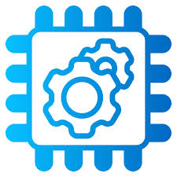
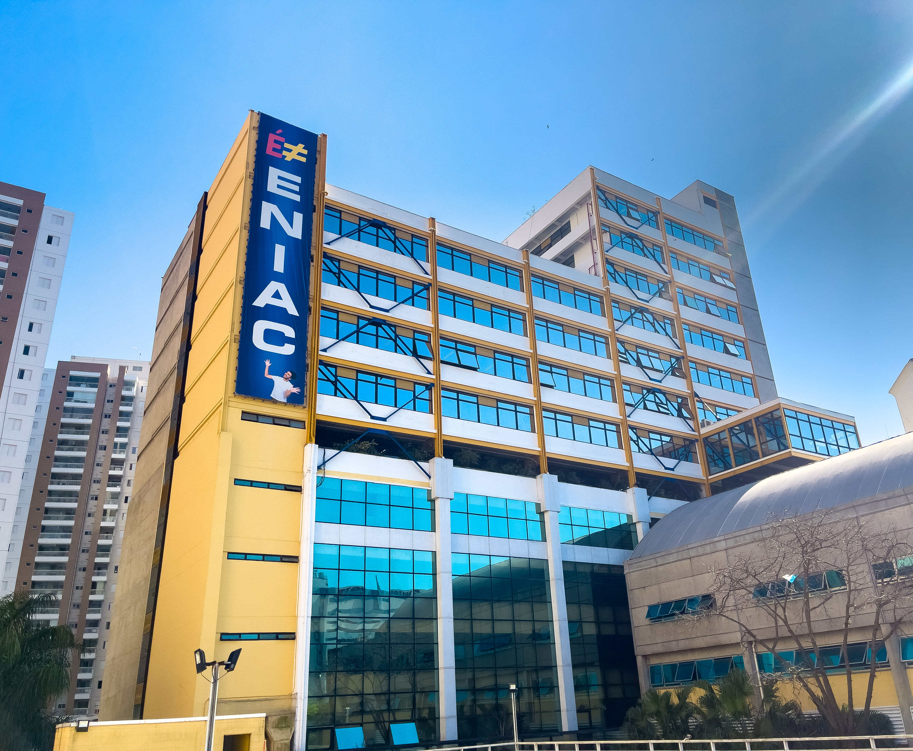
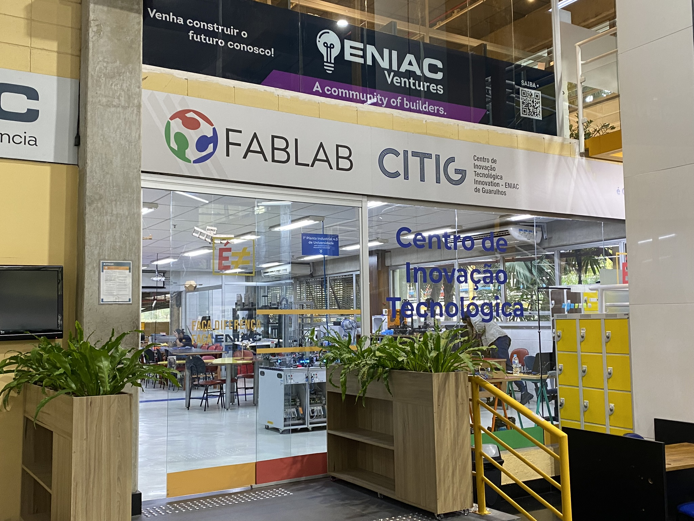

Curso Técnico
O curso técnico do ENIAC é voltado para quem quer entrar preparado no mercado de trabalho.
Com laboratórios modernos, tecnologia e metodologia inovadora, o aluno desenvolve habilidades práticas e profissionais.
N vezes + educação
O eniac possue educação de alta qualidade, com professores qualificados e metodologias inovadoras, promovendo um ambiente de aprendizado dinâmico e eficiente.
N vezes + infraestrutura
O eniac criou uma infraestrutura moderna e completa, possibilitando o aprendizado de qualidade aos seus alunos, que por sua vez se beneficiam de um ambiente propício ao desenvolvimento acadêmico e profissional.
N vezes + capacitação
O eniac oferece capacitação profissional e tecnológica para os seus alunos, preparando-os para o mercado de trabalho e para uma vida profissional saudável e bem sucedida.
N vezes + Educação
No ENIAC, oferecemos uma variedade de cursos técnicos para preparar nossos alunos para o mercado de trabalho. Explore nossos cursos e descubra qual é o ideal para você!


N vezes + Infraestrutura
Investindo no Futuro dos Nossos Alunos
Financiamos cursos profissionalizantes e palestras que representam um investimento direto na formação dos nossos alunos, fortalecendo seu desenvolvimento acadêmico e preparando-os para os desafios do mercado de trabalho.
Nossa instituição oferece diversos métodos e recursos de aprendizagem, garantindo uma formação ampla, atualizada e de qualidade.
Além disso, disponibilizamos quadras esportivas e promovemos campeonatos, incentivando a prática do esporte e reforçando nosso compromisso com uma educação integral.

N vezes + Capacitação
Estágio Obrigatório: Sua Porta de Entrada para o Mercado
No Ensino Médio do ENIAC, a teoria e a prática caminham juntas de forma inseparável. Nosso programa de estágio obrigatório foi cuidadosamente desenhado para que os alunos vivenciem o dia a dia da profissão antes mesmo de concluírem os estudos, garantindo uma capacitação profissional de excelência e uma visão realista do mercado.
Através de parcerias sólidas com diversas empresas de diferentes setores, proporcionamos oportunidades de trabalho real e impactante. Durante o estágio, o aluno não é apenas um observador, mas um participante ativo na resolução de problemas, lidando com prazos, projetos em equipe e aprendendo a dinâmica do mundo corporativo.
Essa experiência imersiva vai muito além do currículo tradicional. Ela desenvolve as chamadas soft skills — como liderança, inteligência emocional, resolução ágil de conflitos e comunicação assertiva — que as grandes empresas tanto exigem hoje. Assim, o aluno ENIAC se forma com um portfólio prático, uma rede de contatos (networking) já estabelecida e as portas abertas para dar o pontapé inicial em uma carreira brilhante e de sucesso.
